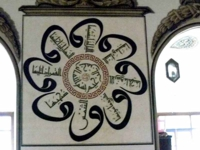
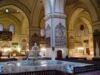
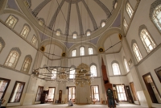
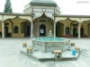
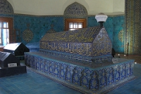
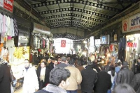

HOME
HOME
ブルサ
ウルダー山の山麓に位置する.
シルク製品が有名で, トルコ王宮のヘレケもここのシルクを使うことが多い.
見所
ウル・ジャーミィ ☆☆

参照:衝撃のイスラミック・カリグラフィー： ウル・ジャーミィ （ブルサ）
参照:Bursa Ulu Cami or Grand Mosque | Wait me Turkey & Come Visit and Discover Turkey
{kind=link}
{kind=link}
▼町の中心的なジャーミィ。ムラトI世、バズヤットI世、メフメットI世の手を渡り、1421年に完成。建築は典型的なセルジューク様式。
20個のドーム型の天井、室内中央のシャドゥルワン(清めの泉)が落ち着いた雰囲気を醸し出している。
壁・天井の文様（イスラミック・カリグラフィー）が美しい。
クルミでできたミンベル(mimber, 説教壇)、説教者の椅子にも注目。(約200文字)
(開) 6:00 - 20:00
(休) 無休
(料) 寄付歓迎
(交)
(時) 2時間
エミール・スルタン・ジャーミィ ☆☆
[記事募集中 タイプA 見どころ-建築物]

参照：エミール・スルタン・ジャーミィ礼拝堂
参照:BURSA'DA BİR PEYGAMBER TORUNU:SEYYİD EMİR SULTAN HAZRETLERİ
{kind=link}
{kind=link}
▼白を基調とした、明るく開放的なジャーミィ（モスク）。
１４世紀、Celebi Sultan Mehmedの治世時に建立されたと考えられる。１７９５年に破壊されるも、１８０４年、セリム三世によって再建。
セリム三世を称える銘があり、これは明暗二色の細工によって極度に抽象化されているものの「アラーのほかに神はなし、モハメッドが神の代弁者である。」と記されている。
中庭はブルサのジャーミィの中で最大かつ最も美しいとされ、参拝者は、この中庭中央にある美しい噴水で手足を清めてから入場する。（２３０字程度）
(開)
(休)
(料)
(交)
(時)
Author HORI, Last Updated 2012-08-30
イェシル・ジャーミィ ☆
[記事募集中 タイプA 見どころ-建築物]
参照：小咄の森 緑の町ブルサまで日帰りツアー Green Bursa, TURKEY
{kind=link}
▼
バザール ☆
[記事募集中 タイプA 見どころ-建築物]
参照：トルコ旅行記 ブルサ：バザールなど
{kind=link}
▼ウル・ジャーミィ付近からバザールが出ている。
カラギョズ（影絵芝居） ☆
[記事募集中 タイプA アトラクション-ショー]
参照：とるこのととと > ブルサ
{kind=link}
▼
▼ご意見
Author ASTRO, Last updated 2012-08-30